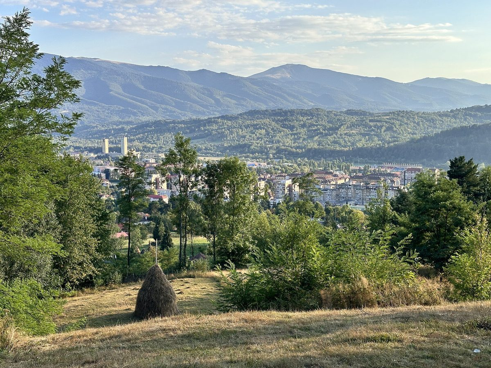

루마니아 옛 탄광지대 지우 계곡에 에너지공동체 지원금 540만 유로…페트로샤니 주택소유자협회가 첫 등록

사업비 98% 지원·자부담 2%, 40가구 공동주택이면 가구당 약 200유로 예시…시민은 협회 법인 세워 에너지규제청에 등록해야, 마감 2027년 3월 31일
루마니아 후네도아라주의 옛 탄광지대 지우 계곡에 에너지공동체를 위한 약 540만 유로의 지원금이 마련됐고, 페트로샤니에서는 주민 모임이 이 지역 첫 에너지공동체 등록을 마쳤다. 지원금은 적격 사업비의 98%까지 대고 자부담은 최소 2%여서, 40가구가 참여하는 공동주택 사업비를 약 40만 유로로 잡으면 자부담 8,000유로를 가구당 약 200유로씩 나누는 셈이 되며, 이 규모라면 이론상 약 13개 사업을 지원할 수 있다. 페트로샤니 콜로니 지구 주택소유자협회는 2024년 그린피스 워크숍에 참석한 뒤 준비에 나서 에너지공동체로 조직하고 에너지규제청(ANRE) 등록을 마쳤는데, 제도와 자금이 지금처럼 갖춰지기 전에 시작한 탓에 시간이 오래 걸렸다. 사업에는 태양광과 저장장치를 넣을 수 있고, 생산한 전기는 먼저 자가소비한 뒤 조합원 소비량이나 내부에서 정한 몫에 따라 나누며 배전사업자가 조합원별 배분량을 계산해 요금에서 빼 주는 방식이지만, ANRE의 나눔 규칙은 아직 최종안이 나오지 않았다. 시민이나 이웃 모임, 관리조합은 직접 신청할 수 없어 정관과 조합원을 갖춘 협회 법인을 세운 뒤 법원 서류, ANRE 등록, 기술 설계·인허가를 마감인 2027년 3월 31일 전에 마쳐야 하고, 시청과 주 의회는 단독으로 신청할 수 있지만 나중에 시민과 함께 에너지공동체를 세워야 한다. 안드레이 크러춘 그린피스 루마니아 캠페인 코디네이터는 "이제는 상황이 달라졌다"며 규칙이 더 분명해지고 자금도 생겼지만 단계마다 늦어질 수 있으니 준비를 마지막 몇 달로 미루지 말라고 당부했다.
시민에너지 관점
공적 자금이 98%를 대고 한 가구가 약 200유로만 보태면 공동주택 지붕 발전소의 공동 주인이 될 수 있다는 계산은, 탄광 지역의 전환 재원이 대형 사업자를 거치지 않고 주민 손에 바로 닿을 수 있음을 보여 준다. 법인 설립과 등록, 인허가가 주민에게 너무 버겁다는 우려가 있지만, 아일랜드 지속가능에너지청(SEAI)이 지속가능에너지공동체(SEC) 사업으로 주민 모임에 멘토를 붙여 에너지 계획 수립을 돕듯 행정 부담은 중간지원으로 덜 수 있고, 이번 공모도 컨설팅·사업관리비 일부를 사업비에 넣을 수 있게 했다. 지자체가 먼저 돈을 받더라도 나중에 시민과 공동체를 세우게 한 조건은, 공공 재원으로 지은 설비의 마지막 주인이 주민이어야 한다는 원칙을 제도에 새긴 것이다. 국내 공동주택 태양광 지원도 관리사무소나 시공 사업자가 아니라 입주민이 세운 법인이 설비를 갖도록 지원 조건을 바꾸고, 지자체가 먼저 맡은 사업은 주민 공동체로 넘기도록 하는 조건을 붙여야 한다.
출처: Gazeta de dimineață 2026-10-28 Ramona Rosulescu 원문 보기
ルーマニアの旧炭鉱地帯ジウ渓谷にエネルギー共同体向け支援金540万ユーロ…ペトロシャニの住宅所有者協会が初登録
事業費の98%を支援し自己負担は2%、40世帯の集合住宅なら1世帯あたり約200ユーロの試算…市民は協会法人を設立してエネルギー規制庁に登録する必要、締め切りは2027年3月31日
ルーマニア・フネドアラ県の旧炭鉱地帯ジウ渓谷で、エネルギー共同体向けに約540万ユーロの支援金が用意され、ペトロシャニでは住民の団体がこの地域初のエネルギー共同体の登録を終えた。支援金は対象事業費の98%まで賄い、自己負担は最低2%で、40世帯が参加する集合住宅の事業費を約40万ユーロとすると、自己負担8,000ユーロを1世帯あたり約200ユーロずつ分け合う計算になり、この規模なら理論上約13件の事業を支援できる。ペトロシャニのコロニエ地区住宅所有者協会は、2024年にグリーンピースのワークショップに参加したのをきっかけに準備を始め、エネルギー共同体として組織してエネルギー規制庁（ANRE）への登録を終えたが、制度と資金が今のように整う前に始めたため時間がかかった。事業には太陽光と蓄電設備を含めることができ、発電した電気はまず自家消費し、その後は組合員の消費量や内部で決めた持ち分に応じて分け、配電事業者が組合員ごとの配分量を計算して料金から差し引く仕組みだが、ANREの分配ルールの最終案はまだ出ていない。市民や近隣のグループ、管理組合は直接申請できないため、定款と組合員を備えた協会法人を設立したうえで、裁判所の書類、ANREへの登録、技術設計と許認可を締め切りの2027年3月31日までに済ませる必要があり、市役所や県議会は単独で申請できるが、後に市民とともにエネルギー共同体を設立しなければならない。グリーンピース・ルーマニアのキャンペーン・コーディネーター、アンドレイ・クラチュン氏は「今は状況が変わった」と述べ、ルールがより明確になり資金もできたが、各段階で遅れが生じうるので準備を最後の数カ月に回さないよう呼びかけた。
市民エネルギーの視点
公的資金が98%を賄い、1世帯が約200ユーロを出すだけで集合住宅の屋根の発電所の共同所有者になれるという試算は、炭鉱地域の転換資金が大手事業者を経ずに住民の手に直接届きうることを示している。法人設立や登録、許認可は住民には重すぎるとの懸念もあるが、アイルランド持続可能エネルギー庁（SEAI）が持続可能エネルギー・コミュニティ（SEC）事業で住民の団体にメンターを付けてエネルギー計画づくりを支えているように、行政上の負担は中間支援で軽くでき、今回の公募もコンサルティングや事業管理の費用の一部を事業費に含められるようにした。自治体が先に資金を受けても後に市民と共同体を設立させる条件は、公的資金で建てた設備の最終的な持ち主は住民であるべきだという原則を制度に刻んだものだ。韓国の集合住宅向け太陽光支援も、管理事務所や施工業者ではなく入居者が設立した法人が設備を所有するよう支援条件を改め、自治体が先に担った事業は住民の共同体に引き継ぐ条件を付けるべきだ。
出典: Gazeta de dimineață 2026-10-28 Ramona Rosulescu 原文を読む
罗马尼亚原煤矿区日乌河谷获540万欧元能源社区资金…佩特罗沙尼一家房主协会率先完成登记
资助项目费用的98%、自筹2%，以40户公寓楼为例每户约200欧元…市民须先成立协会法人并在能源监管局登记，截止日期2027年3月31日
罗马尼亚胡内多阿拉县的原煤矿区日乌河谷（Valea Jiului）已为能源社区准备了约540万欧元资金，佩特罗沙尼的一个居民团体已完成该地区首个能源社区的登记。这笔资金最多可覆盖合规项目费用的98%，自筹比例最低为2%；若一栋有40户参与的公寓楼项目费用按约40万欧元计算，自筹的8,000欧元平均到每户约为200欧元，按此规模理论上可资助约13个项目。佩特罗沙尼科洛尼街区房主协会（Asociația Proprietarilor de Case din Cartierul Colonie）在2024年参加绿色和平组织的工作坊后开始筹备，组建为能源社区并完成了在能源监管局（ANRE）的登记；由于起步时制度和资金尚未像现在这样到位，过程耗时较长。项目可包括光伏和储能设备，所发电力先自用，再按成员用电量或内部约定的份额分配，由配电运营商计算每位成员的分配量并从电费中扣除，但ANRE的分配规则尚未出台最终方案。市民、邻里团体和业主管理组织不能直接申请，必须先成立具备章程和成员的协会法人，并在2027年3月31日截止前完成法院文件、ANRE登记以及技术设计和许可等程序；市政府和县议会可以单独申请，但之后必须与市民共同成立能源社区。绿色和平罗马尼亚活动协调员Andrei Crăciun表示"如今情况已经改变"，规则更加明确，资金也已到位，但每个环节都可能延误，提醒大家不要把准备工作拖到最后几个月。
市民能源视角
由公共资金承担98%，每户只需拿出约200欧元就能成为公寓屋顶电站的共同主人，这一测算说明，煤矿地区的转型资金可以不经大型企业之手，直接送到居民手中。有人担心成立法人、办理登记和许可对居民来说负担太重，但正如爱尔兰可持续能源署（SEAI）通过"可持续能源社区"（SEC）项目为居民团体配备导师、帮助制定能源规划那样，行政负担可以通过中间支持来减轻，这次的资助也允许把部分咨询和项目管理费用计入项目费用。即使地方政府先拿到资金，之后也必须与市民成立社区，这一条件把"用公共资金建成的设备，最终主人应是居民"的原则写进了制度。韩国针对公寓的光伏支持也应修改条件，让由住户成立的法人而不是物业管理处或施工企业拥有设备，并规定由地方政府先行承担的项目要移交给居民共同体。
来源: Gazeta de dimineață 2026-10-28 Ramona Rosulescu 查看原文
Romania's former mining region of the Jiu Valley gets 5.4 million euros for energy communities as a Petroșani homeowners' association becomes the first to register
Grants cover 98% of costs with a 2% own contribution, about 200 euros per household in a worked example for a 40-household block; residents must first form an association and register with the energy regulator, with a deadline of 31 March 2027
About 5.4 million euros has been set aside for energy communities in the Jiu Valley, the former coal-mining area of Romania's Hunedoara County, and in Petroșani a residents' group has completed the area's first energy community registration. The grants cover up to 98% of eligible project costs with an own contribution of at least 2%, so if a project for a block of 40 participating households costs about 400,000 euros, the 8,000-euro contribution works out at about 200 euros per household, and at that size the money could in theory fund about 13 projects. The Colonie District Homeowners' Association (Asociația Proprietarilor de Case din Cartierul Colonie) in Petroșani began preparing after attending a Greenpeace workshop in 2024, organised itself as an energy community and completed registration with the energy regulator ANRE, a process that took longer because it started before the current rules and funding were in place. Projects can include solar panels and storage; the electricity is first used on site and then shared among members according to their consumption or shares set within the community, with the distribution operator calculating each member's allocation and deducting it from their bills, although ANRE has yet to issue final sharing rules. Residents, groups of neighbours and owners' associations cannot apply directly: they must first set up an association with statutes and members, then obtain court papers, register with ANRE and complete technical design and permits before the 31 March 2027 deadline, while town halls and county councils may apply on their own but must later set up an energy community together with residents. Andrei Crăciun, campaign coordinator at Greenpeace Romania, said "things have changed" now that there are clearer rules and funding, but warned that every stage can bring delays and urged groups not to leave their preparation to the last few months.
Citizen Energy View
The calculation that, with public money covering 98%, a household can become a co-owner of a rooftop power plant on its block for about 200 euros shows that transition funds for a coal region can reach residents directly instead of passing through large developers. There are fears that setting up a legal entity, registering and getting permits is too much for residents, but just as the Sustainable Energy Authority of Ireland (SEAI) pairs community groups with mentors to draw up energy plans through its Sustainable Energy Communities (SEC) programme, the administrative load can be eased through intermediary support, and this call also lets part of the consulting and project-management costs be counted as project costs. The condition that local authorities which receive money first must later form a community with residents writes into the rules the principle that the final owners of equipment built with public money should be the residents. Korea's support for solar on apartment blocks should likewise be changed so that an entity set up by residents, not the management office or the installer, owns the equipment, with any project taken on first by a local government required to be handed over to a residents' community.
Source: Gazeta de dimineață 2026-10-28 Ramona Rosulescu Read the original